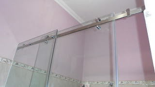
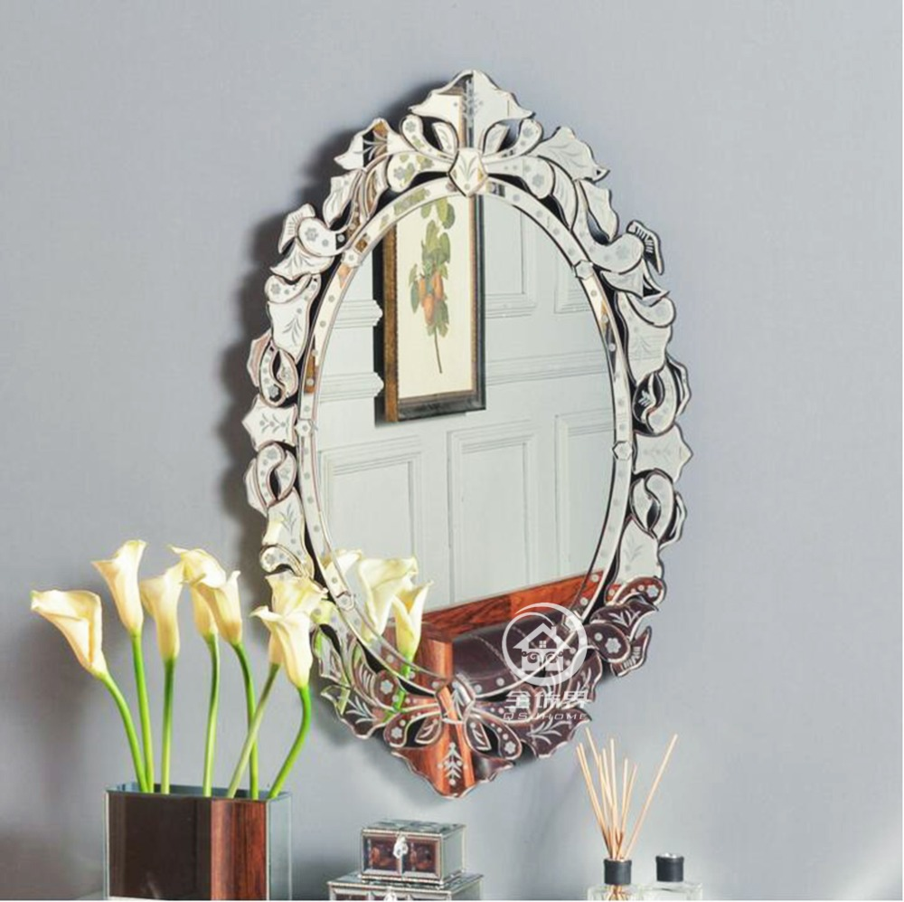

Kaca yakni salah satu material rumah yang pasti senantiasa ada, utamanya sebagai jendela. Kaca kian melengkapi bangunan agar kelihatan lebih indah dan mempunyai skor keindahan seandainya di pandang orang. Kaca juga lazim diterapkan sebagai material untuk pintu, furnitur, railing tangga, shower box, kanopi, table top, dan pun panel dinding.
Kini sudah hadir bermacam maca tipe kaca yang bisa dijumpai, tiap-tiap kaca mempunyai fungsinya masing-masing. Dapat untuk system keamanan, keindahan dan masih banyak yang dapat di dapatkan dari pemasangan kaca. Tipe kaca-kaca hal yang demikian diantaranya adalah kaca tempered, kanopi kaca, kaca frameless, kaca cermin, railing kaca dan masih banyak macam kaca lainnya yang dapat anda dapatakan dan anda aplikasikan pada bangunan. Segala material tersebut dapat di aplikasikan harga sebuah hunian terlihat lebih indah nyaman dan juga aman. Berikut ini sedikit ulasan mengenai kaca bagi sebuah banguanan, fungsi utama dan bagaiman memilih kaca yang layak untuk sebuah hunian baik rumah, kantor ataupun gedung. Akan di jelaskan juga mengenai lantai kayu jati terbaik yang dapat anda beli.
Distributor & Supplier Pintu Lipat Kaca Gorontalo

Pada kenyataannya, harga kaca tempered ini tidak terlalu mahal. Mak dari itu, kaca ini ditawarkan dengan harga yang cukup dan relatif murah. Jenis kaca nomor 6 ini amat direkomendasikan untuk dijadikan sebagai bahan membikin pintu lipat kaca.
Muncul pertanyaan kenapa Semestinya menggunakan kaca tempered. Dengan demikian, cahaya sang surya di siang hari dapat masuk ke dalam ruangan. Dan dengan adanya pintu kaca ini, keamanan kian bagus. Dan yang pasti, ruangan menjadi lebih modern, minimalis, dan nyaman untuk ditempati.
Distributor & Supplier Kaca Shower
Pintu Kaca Shower pada kamar mandi merupakan salah satu pilihan yang bagus untuk desain interior kamar mandi modern. Kelebihan shower screen dibanding dengan sistem penyekatan yang lain merupakan dibuat dalam bentuk yang telah jadi dan tinggal dipasang saja. Jadi sistemnya jauh lebih praktis sebab tak perlu menyiapkan bahan sendiri untuk membikin sekat ruang. Ada beberapa alasan kenapa Pintu Kaca Shower banyak diterapkan salah satunya yakni kaca lebih tampak bersih dan rapi dan juga lebih mudah dalam perawatannya. Di samping pintu kaca shower akan membuat kamar mandi kecil tampak lebih besar. Kita tak perlu repot lagi mencari tukang sendiri sebab pemasangan alat sekat ini memang membutuhkan teknik tersendiri.
Tidak anda membutuhkan kaca shower anda dapat mengunjungi lantas dis.or.id. Disana tersedi kaca shower dengan beragam ukuran dan juga harga yang juga cukup relatif murah.
Distributor, Supplier & Jasa Pasang Kanopi Kaca
Salah satu macam kanopi kaca yang bisa anda aplikasikan pada atap yaitu atap kaca skylight yang yaitu kanopi kaca dalam wujud jendela horizontal atau kubah yang umumnya ditempatkan di atap bangunan yang mempunyai maksud untuk pencahayaan ruangan. Seiring dengan perkembangan zaman di dunia properti, kini kanopi kaca terlah berkembang pesat meniru arsitektur modern . Sifat utama material bahan atap akrilik juga dapat disebut atap acrylic, ini adalah warnanya yang bening tembus pandang. Jadi sudah tidak heran lagi segala orang berharap mencari harga yang betul-betul kompetitif untuk menyesuaikan budget atau anggaran mereka masing – masing untuk membikin produk canopy kaca. Bila tembus pandang, kaca mengabsorpsi sinar yang masuk sehingga semakin tebal kaca maka kian sedikit cahaya yang bisa melewatinya, maka sifat transparannya makin berkurang.|Di samping pintu kaca shower akan membikin kamar mandi kecil nampak lebih besar. Pada atap akrilik, penyerapan cahaya yang terjadi demikian kecil sehingga walaupun ketebalannya bertambah, sifat transparannya tidak banyak berubah.
Seiring dengan perkembangan dunia properti, sekarang kanopi kaca tempered telah berkembang pesat meniru arsitektur modern. Disana anda dapat mendapatkan atap kanopi kaca dengan kwalitas terbaik dan harga terjangkau. Dis.or.id juga menyediakan jasa pemasangan kanopi kaca yang tentunya dengan bantuan energi professional yang sudah berpengalaman. Disana anda akan memperoleh kanopi kaca yang cocok dengan berjenis-jenis ketebalan dan harga yang cukup terjangkau.
Jasa Maintenance Kaca
Jasa maintenance kaca menawarkan pelayanan perawatan bahan bangunan yang terbuat dari kaca. Kaca sungguh-sungguh memerlukan perawatan sebab tiap-tiap hari terkena sinar sang surya atau juga hujan. Tak kaca tidak kusam, karenanya kaca patut dibersihkan secara regular. Perlengkapan jenis kotoran seperti debu serta cahaya matahari dan juga hujan sering membuat kaca gedung menjadi kusan dan tak menarik. Bila itu, mampu membersihkan bangunan kaca melengkung.
Dis.or.id menyiapkan semua macam kaca layak keperluan dikala ini.
Dis.or.id memahami semakin banyak gedung pencakar langit dengan betuk yang berbeda-beda. Dengan energi pakar yang siap untuk mengerjakan pembersihan dan bahan pembersih yang di miliki, kaca gedung perkantoran Anda akan menonjol seperti baru lagi.
Jasa Pemasangan Kaca Tempered

Tak yang sudah di kenal bahwa jasa pemasangan kaca tempered cuma dilaksanakan oleh orang yang profesional. Dibutuhkan kaca ini dijadikan dari kaca float berkualitas tinggi lewat pengerjaan pemanasan thermal di mana kaca dipanaskan hingga pada spot lunak kemudian didinginkan dengan pesat.
Apabila itu, berjenis-jenis komponen properti akan kian menarik kalau dihasilkan dari kaca tempered seperti kanopi, pintu, kamar mandi, dan balkon.
Dengan mangunjungi dis.or.id, anda bisa mendapatkan dan memanfaatkan jasa kaca tempered yang layak dengan kemauan anda. Harga untuk setiap pemasangan dijamin termurah dan hasil proses yang layak dengan kemauan anda. Disana anda dapat memanfaatkan jasa pemasangan kaca tempered untuk semua tipe bidang ataupun bangunan. Tidak ketika ini anda sedang mau membangun suatu bangunan atau gedung, anda dapat memanfaatkan kaca tempered untuk dipakai seketika ke seluruh ragam bidang. Jikalau aman kaca tempered juga kapabel memberikan kesan estetika yang benar-benar bagus dibandingi dengan kata macam lainnya. Anda bisa lantas mengunjungi dis.or.id untuk menerima kabar mengenai jasa pemasangan kaca tempered, memakai kaca tempered dan pastinya hasil yang diberikan bahkan akan pantas dengan apa yang Anda inginkan.
Distributor & Supplier Pintu Kaca

Semakin banyak model pintu kaca ketika ini seperti kaca tanpa frame atau frameless yang banyak diaplikasikan untuk pintu perkantoran dan sentra perbelanjaan. Tak Anda menyukai dengan pintu kaca dengan bingkai, Anda bisa pilih apakah bingkai tersebut terbuat dari bahan kayu atau aluminium. Mengenai modelnya, Anda dapat putuskan apakah berharap memiliki pintu kaca desain lipat, geser, atau teladan yang lain. Tersedia beberapa jenis kaca dengan kwalitas yang terbaik, mulai dari kaca tempered hingga yang non-tempered. Anda tinggal tentukan saja teladan pintu kaca seperti apa yang berkeinginan Anda miliki. Dalam hal ini, terdapat sebagian jenis kaca dengan kualitas yang terbaik. Sekarang paling banyak diminati ketika ini yakni kaca tempered karena jauh lebih kuat dan tahan lama.
Dis.or.id menyediakan pintu kaca dengan beraneka macam yang bisa anda pilih cocok kebutuhan. Observasi Ukuran serta ketebalan menyesuikan dengan keinginan Anda.
Kaca yang di pakai ialah kaca dengan kualitas terbaik.
Jual Kaca Cermin

Lihat saja banyak produk cermin yang dihasilkan dengan desain unik dan menarik. kaca cermin umum diaplikasikan pada bukaan pintu atau jendela dinding luar, yang nantinya diinginkan berpenampilan mewah pada bangunan. Anda bisa tentukan desain seperti apa yang Anda inginkan. Ada cermin persegi yang ditempelkan beraturan, cermin berbentuk seperti daun, dan lain sebagainya. Ada cermin yang didesain unik seperti penyerupai daun, oval, dan lain sebagainya. Tak saja, memang kesan minimalis tampak dari cermin dengan format persegi atau persegi panjang. Sementara itu, dikala dilihat dari luar, kaca ini reflektif. Artinya, Anda tidak bisa melihat yang ada di dalam ruangan.
Anda juga dapat tentukan apakah ingin mempunyai cermin yang mempunyai bingkai atau tak. Tidak saja, desainnya saja yang dirubah. Banyak orang yang lebih menyukai dengan desain kaca cermin minimalis. Karenanya cuma persegi atau persegi panjang. Tidak contoh lemari baju di mana komponen pintunya terbuat dari kaca cermin. Atau kaca cermin ini juga bisa dihasilkan sebagai bahan pintu lemari. Namun, Anda dapat mengamati orang lain dari dalam rumah. Dis.or.id menyediakan kaca cermin yang bisa anda beli dengan harga yang amat murah dan dengan mutu terbaik.
Jasa Pemasangan Railing Kaca

Railing kaca menjadi salah satu bagian yang akan membuat nampak amat minimalis. Tak rumah Anda sudah dibangun dengan desain minimalis, maka tak salah saat railing, entah itu railing tangga dan balkon terbuat dari kaca. Lupakan bahan seperti kayu. Dan kaca ini bisa Anda gunakan sebagai bahan untuk membikin kaca railing. Sebaiknya pakai kaca tempered sebab jenis kaca ini sungguh-sungguh kuat. Tapi, bukan cuma figur yang sebaiknya Anda jadikan pertimbangan saat berkeinginan memesan railing kaca ini.
Dalam hal ini, Anda dapat memastikan sendiri berapa ketebalan dari kaca yang digunakan tersebut. Tentukan juga desain railing kaca. Dengan demikian, pecahan tak akan melukai siapa saja. Kini pasti, railing kaca ini menjadi opsi yang ideal. Bila memberikan kesan minimalis pada interior rumah, ini juga membuat rumah Anda tampak lebih nyaman untuk dibuat tempat tinggal.
Railing kaca dengan mutu terbaik dapat anda dapatkan di dis.or.id. Harga yang benar-benar ekonomis serta mutu terbaik yang telah terjamin membikin anda tak akan menyesal membeli railing kaca di dis.or.id.
Jasa Pemasangan Kubikel Toilet

Kubikel kaca banyak dijumpai di pelbagai tempat besar seperti perkantoran, gedung, bahnkan sekarang juga dapat di gunakan untuk hunian rumah. Tetapi, seiiring berkembangnya desain interior, kamar mandi malahan dapat di sekat dengan penyekat dari kaca.
Dengan mengaplikasikan toilet kubikel tentnya WC yang anda miliki Terlihat lebih elegan dan mewan jauh dari kesan dekil. Kaca sebagai penyekat dalam kamar mandi umum disebut kaca shower. Kaca shower banyak digunakna sebab memberikan kesan mewah.
Tersedia beragam ukuran serta ketebalan dari kubikel yang dapat anda pilih pantas dengan yang anda inginkan.
Tetapi pemakaian kaca di kamar mandi bisa jadi keadaan sulit saat Anda meletakkannya dengan salah. Justru embun bisa menempel di kaca dan lambat laun bisa membuat kaca tak sejernih semula. Jika anda ketika ini sedang membutuhkan kaca shower untuk kamar mandi, seketika saja kunjungi dis.or.id untuk melakukakn pemesanan maupun menanyakan detail harga dari kaca shower.
Distributor & Supplier Partisi Kaca

Partisi kaca menjadi opsi yang pas bagi Anda yang berharap menghemat biaya bangunan. Banyak rumah hunian yang sekatnya sekarang terbuat dari kaca. Tarif ini disebabkan banyak keunggulan dari partisi modern ini. Sebab memang pembuatan partisi ini jauh lebih murah. Dalam hal ini, Anda sepatutnya tahu variasi kaca apa yang bagus untuk partisi. Selain itu, tentukan juga desainnya apakah partisi kaca frameless (tanpa bingkai) atau dengan frame. Kecuali itu, pertimbangkan juga privacy. Ini yang akan Anda menentukan hal yang apakah Anda kaca transparan, semi transparan, atau kaca cermin. , untuk space yang tak begitu luas, Anda dapat menyekat menjadi ruangan dengan partisi ini tanpa merasa ruangan menjadi benar-benar sempit. Anda mereka. , Anda mesti tahu ada desain yang berbeda. Ada partisi kaca frameless atau tanpa bingkai dan partisi dengan bingkai. Selain itu, tentukan juga macam kaca yang berkeinginan apakah transparan, semi transparan, atau kaca cermin yang membikin ruangan benar-benar privat. Dis.or.id menjual pelbagai macam kaca penyekat yang kualitasnya terbaik. Seandainya anda sedang mencari distributor dan supplier partisi kaca yang memiliki kaca dengan kwalitas terbaik, anda tinggal mengunjungi dis.or.id. Disana anda akan mendapatkan partisi kaca yang cocok dengan anda.